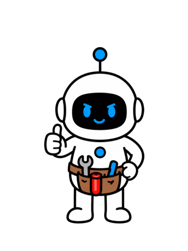
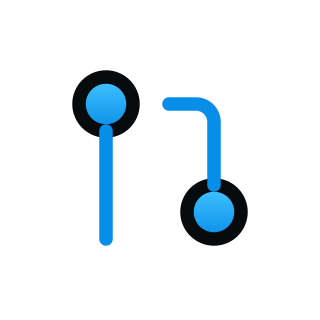
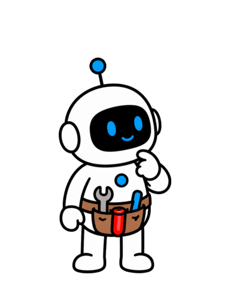
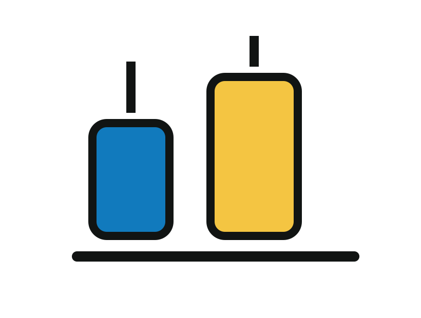
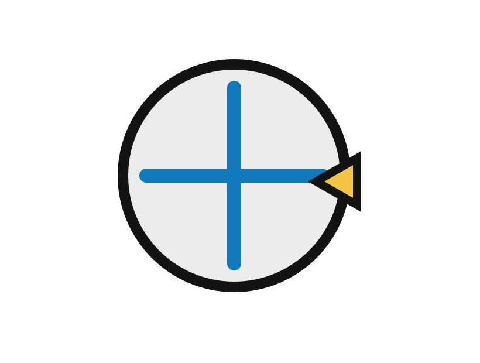
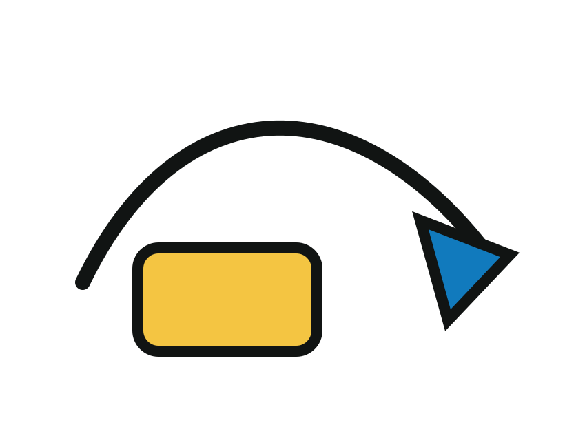
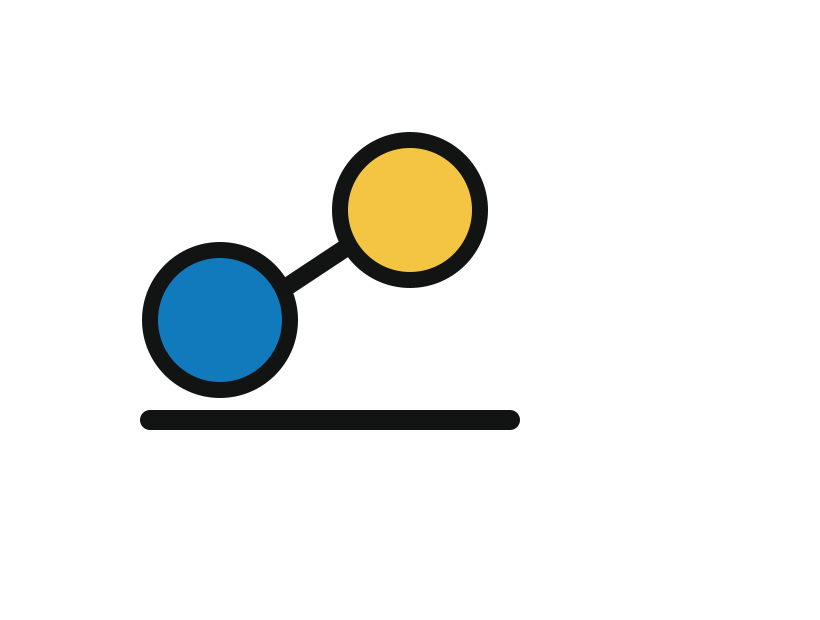
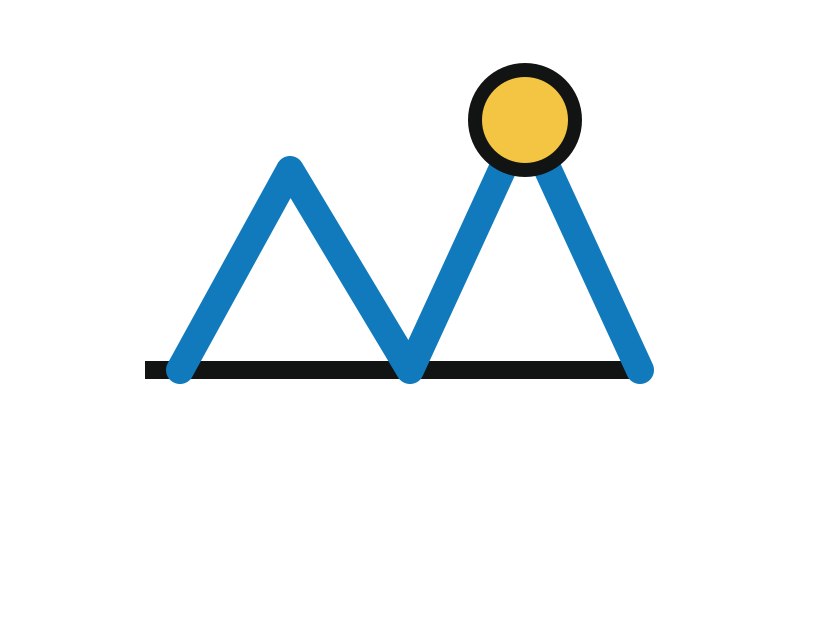

AI Agent across context windows


AI Agentacrosscontextwindows
AI Agent across context windows
Anthropic tested a long-running setup

Anthropic tested a long-running setup
Restarts burn time and raise risk

Restarts burn time and raiserisk
A small handoff directs the next session

≠
A small handoff directsthe next session
The five-part continuity plan


The five-partcontinuityplan
Save this progress system for later

Before the next session

Leave an inspectable stateFollow · SaveSave this progress system for later
Chapter 2
The Reset Problem
Each context window is a newsession with incomplete


Too much work or premature completion

Too much work or prematurecompletion
New sessions need the current state
New sessions need the currentstate
Choose a safe next action

Choose a safenext action

Inspect state, uncertainty, and next steps

Inspect state, uncertainty,and next steps
Keep state outside the window

Keep state outside the window
1.A reset can erase working state
2.Partial work invites repeats orpremature claims
3.Actionable state beats a transcript
1.A reset can erase working state
2.Partial work invites repeats orpremature claims
3.Actionable state beats a transcript
1.A reset can erase working state
2.Partial work invites repeats orpremature claims
3.Actionable state beats a transcript
Chapter 3
Build a Working Floor
The floor is the smallestverified state from which

Use equivalent anchors in other domains


Useequivalentanchors inother domains
Map the work before driving

Map the work before driving
A feature needs real verification

A feature needs realverification
Make requirements easy to inspect
Make requirements easy toinspect
Prepare the next session
Prepare the next session
1.Verify a minimal working floor
2.Expose requirements and constraints
3.Prepare future sessions beforedelivery
1.Verify a minimal working floor
2.Expose requirements and constraints
3.Prepare future sessions beforedelivery
1.Verify a minimal working floor
2.Expose requirements and constraints
3.Prepare future sessions beforedelivery
Chapter 4
Shrink the Next Move
A long-running AI Agent shouldadvance one meaningfu
Fit the next move in context

Fit the next move in context
Change, test, then record

Change, test, then record
Small units reduce recovery cost

Small unitsreducerecovery cost
Tie work to a verification signal

≠
Tie work to a verificationsignal
Split work by observable outcome
Split work by observableoutcome
1.Choose one bounded objective
2.Attach a real success signal
3.Split by observable outcome
1.Choose one bounded objective
2.Attach a real success signal
3.Split by observable outcome
1.Choose one bounded objective
2.Attach a real success signal
3.Split by observable outcome
Chapter 5
Write the Handoff
Chapter 4: Write the Handoff

Evidence makes a decision usable
≠
Evidence makes a decisionusable
Link the feature list and progress
Link the feature list andprogress
A diff is not progress by itself

A diff is not progress by itself
Record decisions with evidence
Record decisions withevidence
Link sources, not context

Link sources, not context
1.Record evidence with decisions
2.Link to inspectable sources
3.Make boundaries explicit
1.Record evidence with decisions
2.Link to inspectable sources
3.Make boundaries explicit
1.Record evidence with decisions
2.Link to inspectable sources
3.Make boundaries explicit
Chapter 6
Verify Before Advance
A unit test alone may not provean end-to-end featur
Verify user-visible outcomes
Verifyuser-visibleoutcomes
Evidence before a completion claim

Evidence before a completionclaim
A pass flag is not the proof

≠
A pass flag is not the proof
Turn resets into focused continuations
Turn resetsinto focusedcontinuations
Failures become next diagnostics
Failures become nextdiagnostics
1.Check user-visible outcomes
2.Evidence comes before completion
3.Failures become next diagnostics
1.Check user-visible outcomes
2.Evidence comes before completion
3.Failures become next diagnostics
1.Check user-visible outcomes
2.Evidence comes before completion
3.Failures become next diagnostics
A handoff makes continuity visible
≠
A handoff makescontinuity visible
Build a verified working floor
Build a verified working floor
Choose a bounded next move
Choose a bounded next move
Write an evidence-backed handoff
Write anevidence-backedhandoff
Verify before claiming progress
Verify before claimingprogress
Keep the next session moving
≠
Keep the next sessionmoving
Anthropic studied this problem in a long-running coding setup.
Their useful conclusion is simple: do not ask a fresh session to rediscover
the whole project before it can help.
Without a working floor, an Agent can restart by guessing, repeat
already-finished work, or mistake a half-built feature for a completed task.
That burns time and quietly raises risk.
The reusable tool in this episode is a Long-Running AI Agent Progress &
Handoff Card.
It turns a vague continuation request into a small, inspectable next move.
We will separate the reset problem, the minimum starting state, the size of
a good next move, the handoff itself, and the evidence required before
progress is claimed.
This video is packed with practical, high-value insights to help you get
better at using AI.
It's a longer one, so follow Tiny Agent and save it so you don't lose it.
A long task does not become continuous just because the Agent has a loop.
Each context window is a new session with incomplete memory of what happened
That reset creates two costly failure modes.
before.
The Agent can attempt too much at once, or it can see partial progress and
declare the entire job finished.
Compaction can preserve some context, but it is not a substitute for a
durable work state.
A new session still needs to know what matters now.
Treat the handoff as an interface, not as a diary.
It should help the next Agent choose a safe next action without rereading
every past conversation.
Do not ask what the last session discussed.
Ask what is true in the environment, what remains unproven, and what should
happen next.
A reset becomes manageable when the project keeps a small source of truth
outside the context window.
Chapter recap.
First, a context window reset can erase practical working state.
Second, partial work can trigger either repeated effort or premature
completion.
Third, the next session needs an actionable state, not a transcript.
Start with a working floor before asking an AI Agent to add a feature.
The floor is the smallest verified state from which new work is safe.
For software work, that usually includes a runnable environment, a feature
list, a progress record, and a quick end-to-end check.
Other domains need equivalent anchors.
The initializer has a distinct job: make future sessions less dependent on
It prepares the map before anyone starts driving.
inference.
Keep requirements in a structure that makes completion visible.
A feature is not complete because it sounds finished;
it is complete when its observable behavior passes.
Also record the current constraints: accepted inputs, forbidden changes,
known failures, and the evidence a reviewer will need.
A stable floor reduces the temptation to rebuild the foundation in every
Chapter recap.
session.
First, create a minimal verified starting environment.
Second, make requirements and current constraints easy to inspect.
Third, treat the initializer as setup for future sessions, not as one-shot
Once the floor exists, shrink the next move.
delivery.
A long-running AI Agent should advance one meaningful unit instead of trying
to finish the whole project in one pass.
Choose a unit that has a clear boundary: one feature, one failure to
reproduce, one data check, or one reviewable decision.
It should fit inside the available context.
A small move still needs a result.
The Agent should change a real state, run the relevant verification, and say
what that verification did and did not prove.
This is not slow for its own sake.
Small completed units avoid the expensive recovery work caused by abandoned
half-implementations.
When a request is too large, split by a user-observable outcome rather than
by arbitrary files or token counts.
The progress card should name one next move, its success signal, and its
stop condition.
Chapter recap.
First, give each session one bounded meaningful objective.
Second, connect that objective to a real verification signal.
Third, split oversized work by observable outcome, not by convenience.
A useful handoff answers four questions fast: what changed, what is
verified, what is uncertain, and what is the next smallest safe action.
Write decisions and evidence beside each other.
A choice is usable when it names the browser evidence that passed and the
alternative that failed.
Leave paths to the source of truth, not a copied wall of context.
The next Agent can inspect the feature list, progress note, tests, or
artifacts on demand.
Keep the environment clean enough for another person or Agent to begin
Hidden breakage is not progress merely because a diff exists.
immediately.
A good handoff also names a boundary: do not change this integration, do not
claim this metric, or wait for this external approval.
That boundary is how you preserve human judgment when the Agent continues
independently.
Chapter recap.
First, record changes, evidence, uncertainty, and the next move.
Second, link to inspectable sources instead of copying all context.
Third, make constraints explicit so the next Agent does not overreach.
Before an AI Agent marks progress complete, verify the claimed outcome at
the level the user will experience.
A unit test alone may not prove an end-to-end feature works.
The source article describes better results when Agents were explicitly
prompted to use browser automation for end-to-end checks in a web-app
Use the narrowest sufficient check first, then add a realistic workflow
setting.
check when the claim affects an interface, integration, or delivery.
Update the progress card only after the evidence exists.
A pass flag is an output of verification, not a substitute for it.
When verification fails, preserve the failure, the reproduction path, and
the smallest next diagnostic step.
That turns a reset into a focused continuation.
This is also the human gate: people decide whether the evidence is enough
for the consequence at stake.
Chapter recap.
First, verify outcomes at the level users actually experience.
Second, record evidence before changing a task to complete.
Third, turn failures into precise next diagnostics rather than vague
Long-running AI Agents need continuity by design, not by optimism.
retries.
First, establish a working floor with a runnable environment, clear
requirements, and a fast reality check.
Second, make one bounded move at a time and verify its observable result.
Third, leave a handoff that states changes, evidence, uncertainty,
boundaries, and the next safe action.
Use the Long-Running AI Agent Progress & Handoff Card whenever work must
cross sessions, people, or context windows.
The practical test is simple: could a fresh Agent begin useful work without
guessing what the last one meant?
Follow Tiny Agent.
Can an AI Agent
stay on track across
context windows?


Follow Tiny Agent
Tiny Agent helps youget better at using AI.